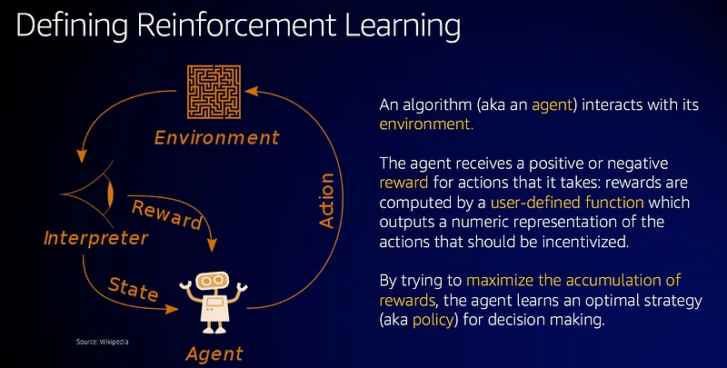

Talk: An Introduction to Reinforcement Learning
Here’s a presentation I just did at the AWS Builders Days in London and Dublin. This includes an introduction to RL as well as some examples running on SageMaker.

Happy to answer questions. Please follow me on Twitter for more content.